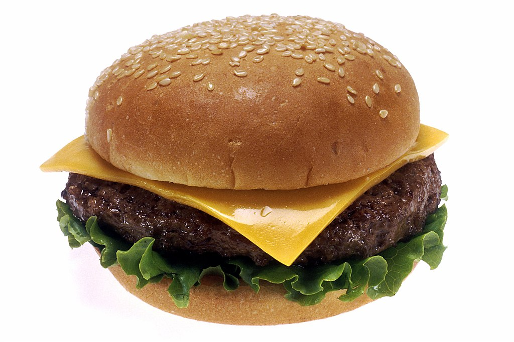

Hamburger

Description
- 1 lb (450 g) ground beef (80% lean)
- 1 tsp salt
- 1/2 tsp black pepper
- 1/2 tsp garlic powder (optional)
- 1/2 tsp onion powder (optional)
- 4 hamburger buns
- 4 slices of cheese (optional)
- Lettuce leaves
- Tomato slices
- Onion slices
- Pickles
- Ketchup
- Mustard
- Mayonnaise
- In a large bowl, combine the ground beef, salt, pepper, garlic powder, and onion powder. Mix until just combined, being careful not to overwork the meat.
Divide the mixture into 4 equal portions and shape each into a patty about 3/4 inch thick. Make a small indentation in the center of each patty with your thumb to prevent it from puffing up during cooking.
- Preheat your grill to medium-high heat or a skillet over medium-high heat.
Place the patties on the grill or skillet. Cook for about 4-5 minutes on the first side, then flip and cook for another 4-5 minutes on the other side, or until they reach your desired level of doneness.
If adding cheese, place a slice on each patty during the last minute of cooking and cover to melt.
- While the patties are cooking, lightly toast the hamburger buns on the grill or in a toaster until golden brown.
- Spread your desired condiments (ketchup, mustard, mayonnaise) on the bottom half of each bun.
Place a cooked patty on each bun.
Top with lettuce, tomato slices, onion slices, and pickles.
Cover with the top half of the bun.
- Serve the hamburgers immediately with your favorite sides like fries, chips, or a salad.